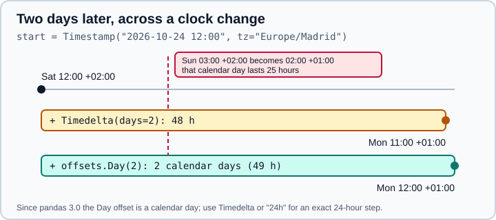

Time Series and Dates
|
This content was generated with the assistance of AI and should be verified against the official documentation before being relied on in production. |
Dates and times are among the oldest strengths of pandas and also among the places where old code breaks most often
on pandas 3. This page covers the core objects (Timestamp, DatetimeIndex, Period, DateOffset), how to parse and
generate dates, how to select by date, the frequency aliases and offsets, business calendars, time zones and the
pandas 3 changes that matter: the default resolution is now microseconds, zoneinfo replaced pytz, the old
frequency aliases (M, H, T, …) are gone and Day is a calendar day. It targets pandas 3.1 on Python 3.13 or
3.14 and was checked in October 2026; every example was run with Python 3.13 and pandas 3.1.0 and the printed output
is the real output.
Changing the frequency of a series (resample, asfreq) is covered in
Resampling and Frequencies and durations in
Time Deltas. Window functions over time are in
Rolling, Expanding and EWM. For NumPy’s own date type see
datetime64, and for the R equivalent
dates and times in R.
import datetime as dt
import numpy as np
import pandas as pd
print(pd.__version__)3.1.0The four time concepts
| Concept | Scalar | Array type | dtype | Create with |
|---|---|---|---|---|
Date and time |
|
|
|
|
Duration |
|
|
|
|
Span of time |
|
|
|
|
Calendar offset |
|
none |
stored as |
|
Missing datetimes are NaT ("not a time"). Like NaN it is not equal to itself, so use isna() to test for it.
Resolution: microseconds by default
Until pandas 2.x, to_datetime, DatetimeIndex and Series of datetimes always stored nanoseconds. Since pandas 3.0
the default resolution is microseconds (datetime64[us]), chosen from the input: parsing a string gives us, and
only a string with nanosecond digits gives ns. Numeric input with a unit, such as unit="s", also gives datetime64[us] in pandas 3.1. The resolution is the unit of the stored integer, and you can read it from the
unit attribute and change it with as_unit.
print(pd.Timestamp("2026-10-31 14:30").unit)
print(pd.Timestamp("2026-10-31 14:30:00.123456789").unit)
print(pd.to_datetime(["2026-10-31", "2026-11-01"]).dtype)
print(pd.date_range("2026-01-01", periods=3, freq="D").dtype)
print(pd.date_range("2026-01-01", periods=3, freq="D", unit="s").dtype)
print(pd.DatetimeIndex(["2026-01-01"]).as_unit("ns").dtype)
print(pd.Timestamp("3000-06-10").unit) # outside the nanosecond range: no error
print(pd.Timestamp.min, pd.Timestamp.max) # the nanosecond boundsus
ns
datetime64[us]
datetime64[us]
datetime64[s]
datetime64[ns]
us
1677-09-21 00:12:43.145224193 2262-04-11 23:47:16.854775807Three consequences of the change are worth knowing:
-
Integer conversion is 1000 times smaller.
astype("int64")returns the count of the current unit, so a datetime that gave nanoseconds before now gives microseconds. Do not hard-code a factor; convert explicitly. -
Larger range. Nanoseconds only cover the years 1677 to 2262. A microsecond index covers about 584,000 years, so dates such as 3000-06-10 or 1500-01-01 no longer raise
OutOfBoundsDatetimeby default. -
Mixed units combine to the finer one. Concatenating a
usand annscolumn givesns.
x = pd.Series(pd.to_datetime(["1970-01-02"]))
print(x.astype("int64").tolist()) # microseconds since the epoch
print(x.dt.as_unit("ns").astype("int64").tolist()) # nanoseconds, the pandas 2 value
st = pd.Series(pd.to_datetime(["2026-10-31 12:00"]))
print(((st - pd.Timestamp("1970-01-01")) // pd.Timedelta("1s")).tolist()) # unit-independent seconds
print(pd.Timestamp("2026-10-31 12:00").timestamp()) # a naive Timestamp is read as UTC
print(pd.concat([pd.Series(pd.to_datetime(["2026-01-01"])),
pd.Series(pd.to_datetime(["2026-01-01"]).as_unit("ns"))]).dtype)[86400000000]
[86400000000000]
[1793448000]
1793448000.0
datetime64[ns]To get epoch seconds in a way that does not depend on the unit, subtract the epoch and floor-divide by a Timedelta, as the
second line above does; the same expression gives the same number in pandas 2 and 3. Floats lose precision for
epochs (around 15 significant digits), so keep epoch values as 64-bit integers.
Parsing with to_datetime
pd.to_datetime(arg) converts strings, numbers, datetime objects and DataFrame columns. A single string returns a
Timestamp, a list or array a DatetimeIndex, and a Series a Series of dtype datetime64.
| Argument | Meaning |
|---|---|
|
A |
|
How to read ambiguous strings such as |
|
|
|
|
|
For numbers: the unit ( |
|
Whether the format must match the whole string; whether to cache repeated values. |
print(pd.to_datetime(pd.Series(["31/10/2026", "01/11/2026"]), format="%d/%m/%Y").tolist())
print(pd.to_datetime(["2026-10-31", "not a date"], errors="coerce"))
print(pd.to_datetime("20261031", format="%Y%m%d"))
print(pd.to_datetime([1_700_000_000, 1_700_086_400], unit="s"))
print(pd.to_datetime([1, 2, 3], unit="D", origin=pd.Timestamp("1960-01-01")))
parts = pd.DataFrame({"year": [2026, 2027], "month": [1, 2], "day": [3, 4]})
print(pd.to_datetime(parts).tolist())[Timestamp('2026-10-31 00:00:00'), Timestamp('2026-11-01 00:00:00')]
DatetimeIndex(['2026-10-31', 'NaT'], dtype='datetime64[us]', freq=None)
2026-10-31 00:00:00
DatetimeIndex(['2023-11-14 22:13:20', '2023-11-15 22:13:20'],
dtype='datetime64[us]', freq=None)
DatetimeIndex(['1960-01-02', '1960-01-03', '1960-01-04'],
dtype='datetime64[us]', freq=None)
[Timestamp('2026-01-03 00:00:00'), Timestamp('2027-02-04 00:00:00')]Source: pandas.to_datetime.
When format is not given pandas infers it from the first element and then applies it to the rest. A column that mixes
2026-10-31 and 2026-10-31 10:00 fails with ValueError; give format="ISO8601" (or "mixed") for such data:
mixed = ["2026-10-31", "2026-10-31 10:00"]
try:
pd.to_datetime(mixed)
except ValueError as exc:
print("ValueError:", str(exc)[:70])
print(pd.to_datetime(mixed, format="ISO8601").tolist())ValueError: unconverted data remains when parsing with format "%Y-%m-%d": " 10:00"
[Timestamp('2026-10-31 00:00:00'), Timestamp('2026-10-31 10:00:00')]Source: pandas.to_datetime.
A column of strings with different UTC offsets also raises, because pandas no longer silently produces an object column.
Pass utc=True to convert them to one zone:
offsets = ["2026-10-31 10:00+02:00", "2026-10-31 10:00+01:00"]
try:
pd.to_datetime(offsets)
except ValueError as exc:
print("ValueError:", str(exc)[:60])
print(pd.to_datetime(offsets, utc=True))ValueError: Mixed timezones detected. Pass utc=True in to_datetime or tz
DatetimeIndex(['2026-10-31 08:00:00+00:00', '2026-10-31 09:00:00+00:00'],
dtype='datetime64[us, UTC]', freq=None)The arguments infer_datetime_format and date_parser, common in older tutorials, were removed in pandas 3.0
(TypeError); use format and parse in two steps if a custom parser is really needed. The default errors="raise"
is a good choice: "coerce" turns bad data into NaT silently, so count the new missing values afterwards.
Source: pandas.to_datetime.
Generating ranges
date_range(start, end, periods, freq) creates a regular DatetimeIndex; give any three of the four. The default
frequency is a calendar day ("D"), bdate_range defaults to business days ("B"), and both include their endpoints
unless you pass inclusive="left", "right" or "neither".
print(pd.date_range("2026-01-31", periods=4, freq="ME"))
print(pd.date_range("2026-01-01", "2026-01-10", freq="3D"))
print(pd.bdate_range("2026-10-29", periods=4))
print(pd.date_range("2026-01-01", "2026-01-02", periods=5))
print(pd.date_range("2026-01-01", periods=3, freq="2h30min"))
print(pd.date_range("2026-01-01", "2026-01-05", inclusive="neither"))DatetimeIndex(['2026-01-31', '2026-02-28', '2026-03-31', '2026-04-30'],
dtype='datetime64[us]', freq='ME')
DatetimeIndex(['2026-01-01', '2026-01-04', '2026-01-07', '2026-01-10'],
dtype='datetime64[us]', freq='3D')
DatetimeIndex(['2026-10-29', '2026-10-30', '2026-11-02', '2026-11-03'],
dtype='datetime64[us]', freq='B')
DatetimeIndex(['2026-01-01 00:00:00', '2026-01-01 06:00:00',
'2026-01-01 12:00:00', '2026-01-01 18:00:00',
'2026-01-02 00:00:00'],
dtype='datetime64[us]', freq=None)
DatetimeIndex(['2026-01-01 00:00:00', '2026-01-01 02:30:00',
'2026-01-01 05:00:00'],
dtype='datetime64[us]', freq='150min')
DatetimeIndex(['2026-01-02', '2026-01-03', '2026-01-04'],
dtype='datetime64[us]', freq='D')With start, end and periods together the points are evenly spaced and freq is not used (the index has no freq).
If start does not fall on the frequency, the first element is the next valid date. period_range does the same for
Period values, and timedelta_range for durations.
Source: pandas.date_range.
Selecting by date
A DatetimeIndex makes selection by date strings natural. A string coarser than the index resolution selects a slice
(a whole month, a whole hour), a string at the index resolution is an exact match, and label slices include both
endpoints.
ts = pd.Series(np.arange(400), index=pd.date_range("2026-01-01", periods=400, freq="D"))
print(ts["2026-02"].shape) # all of February
print(ts["2026-02-03":"2026-02-05"].tolist()) # inclusive on both ends
print(ts["2026-03-01"]) # a scalar: exact match
print(ts.loc["2026-12-30":].index[[0, -1]].tolist())(28,)
[33, 34, 35]
59
[Timestamp('2026-12-30 00:00:00'), Timestamp('2027-02-04 00:00:00')]Source: pandas user guide: Indexing.
On a DataFrame, a plain string in square brackets selects a column, not rows, so df["2026-02"] raises KeyError.
Use .loc for row selection by date:
df = ts.to_frame("v")
try:
df["2026-02"]
except KeyError as exc:
print("KeyError:", exc)
print(df.loc["2026-02"].shape)KeyError: '2026-02'
(28, 1)Source: pandas user guide: Indexing.
For times of day, at_time selects an exact time on every day and between_time a range of times (which may wrap
past midnight); truncate cuts to a date range:
hours = pd.Series(range(48), index=pd.date_range("2026-10-01", periods=48, freq="h"))
print(hours.at_time("12:00").tolist())
print(hours.between_time("22:00", "01:00").shape)
print(hours.between_time("22:00", "01:00", inclusive="left").shape)
print(hours["2026-10-01 23"].tolist(), hours["2026-10-01 23:00"])[12, 36]
(8,)
(6,)
23 23Half-open intervals need a boolean mask, because label slicing is always closed:
ts[(ts.index >= "2026-02-01") & (ts.index < "2026-03-01")]. Slicing a sorted index is fast (binary search); an unsorted
DatetimeIndex gives unexpected results, so call sort_index() first.
Source: pandas user guide: Indexing.
Date components and the dt accessor
A Series of datetimes exposes its fields through .dt, and a DatetimeIndex has the same attributes directly:
i = pd.date_range("2026-10-29", periods=4, freq="D")
s = pd.Series(i)
print(s.dt.year.tolist(), i.month.tolist(), i.day.tolist())
print(i.day_name().tolist(), i.month_name().tolist())
print(i.day_of_week.tolist(), i.day_of_year.tolist(), i.quarter.tolist())
print(i.is_month_end.tolist())
print(i.isocalendar())
print(s.dt.strftime("%Y/%m/%d").tolist())
print(s.dt.to_period("M").tolist())
print(pd.Timestamp("2026-10-31 14:37").round("h"), pd.Timestamp("2026-10-31 14:37").ceil("15min"))[2026, 2026, 2026, 2026] [10, 10, 10, 11] [29, 30, 31, 1]
['Thursday', 'Friday', 'Saturday', 'Sunday'] ['October', 'October', 'October', 'November']
[3, 4, 5, 6] [302, 303, 304, 305] [4, 4, 4, 4]
[False, False, True, False]
year week day
2026-10-29 2026 44 4
2026-10-30 2026 44 5
2026-10-31 2026 44 6
2026-11-01 2026 44 7
['2026/10/29', '2026/10/30', '2026/10/31', '2026/11/01']
[Period('2026-10', 'M'), Period('2026-10', 'M'), Period('2026-10', 'M'), Period('2026-11', 'M')]
2026-10-31 15:00:00 2026-10-31 14:45:00Notes on the components:
-
Monday is 0 and Sunday is 6 in
day_of_week. The aliasesdayofweekanddayofyearare deprecated in pandas 3.1 (aPandas4Warning); writeday_of_weekandday_of_year. -
isocalendar()returns the ISO year, week and day; use it instead of the oldweekandweekofyearattributes, which no longer exist. -
floor,ceilandroundsnap to a frequency;normalize()sets the time to midnight. -
strftimereturns strings (the newstrdtype), so format at the end of a pipeline, not in the middle.
Frequencies and offsets
A frequency is a string alias for an offset object: "D" is pd.offsets.Day(), "ME" is
pd.offsets.MonthEnd(). Aliases are used by date_range, shift, resample, asfreq and Grouper, and a number can
prefix them: "3D", "2h30min".
| Alias | Meaning | Old alias (removed in 3.0) |
|---|---|---|
|
calendar day |
(unchanged) |
|
business day (Monday to Friday) |
(unchanged) |
|
weekly, anchored to a weekday |
(unchanged) |
|
month end, month start |
|
|
business month end, business month start |
|
|
semi-month end (15th and month end), semi-month start |
|
|
quarter end, quarter start |
|
|
year end, year start |
|
|
hour, minute, second |
|
|
millisecond, microsecond, nanosecond |
|
|
business hour, custom business hour |
|
Anchored variants name the month or weekday: QE-JAN to QE-DEC (QE is QE-DEC), YE-JUN for a fiscal year ending in
June, W-MON to W-SUN. The old aliases were deprecated in pandas 2.2 and raise ValueError in pandas 3.0. In pandas 3.1 M, Q, Y, A, BM,
BH, SM, H, T, S, L, U and N are all rejected, while s, D, W, ME, h, min, ms, us, ns, SME,
BYE and bh work. The Period aliases are a separate set
and still use the short names M, Q and Y.
for alias in ["M", "H", "T", "S", "ME", "h", "min", "s"]:
try:
pd.date_range("2026-01-01", periods=2, freq=alias)
print(f"{alias:4} ok")
except ValueError as exc:
print(f"{alias:4} ValueError")M ValueError
H ValueError
T ValueError
S ValueError
ME ok
h ok
min ok
s okSource: pandas user guide: Offset aliases.
Offsets as objects
Offsets can be added to a Timestamp, a DatetimeIndex or a Series. Unlike a Timedelta, a calendar offset follows calendar
rules:
friday = pd.Timestamp("2026-10-30")
print(friday + pd.offsets.BDay(2)) # two business days
print(friday + pd.offsets.MonthEnd()) # next month end
print(friday + pd.offsets.MonthBegin()) # next month start
print(friday + pd.DateOffset(months=1))
print(pd.Timestamp("2026-01-31") + pd.DateOffset(months=1)) # clipped to the last valid day
print(pd.Timestamp("2026-10-31 09:15") + pd.offsets.MonthEnd(0)) # already on an anchor: stays
print(pd.Timestamp("2026-10-31 09:15") + pd.offsets.MonthEnd(1)) # time of day is kept
print(pd.offsets.MonthEnd().rollforward(pd.Timestamp("2026-10-15")),
pd.offsets.MonthEnd().rollback(pd.Timestamp("2026-10-15")),
pd.offsets.MonthEnd().is_on_offset(pd.Timestamp("2026-10-31")))2026-11-03 00:00:00
2026-10-31 00:00:00
2026-11-01 00:00:00
2026-11-30 00:00:00
2026-02-28 00:00:00
2026-10-31 09:15:00
2026-11-30 09:15:00
2026-10-31 00:00:00 2026-09-30 00:00:00 Truerollforward and rollback move a date to the nearest valid date of the offset (and leave a valid date alone), while
adding the offset always moves by one step. Offsets keep the time of day; call .normalize() to reset it to midnight.
Day is a calendar day since pandas 3.0
pd.offsets.Day (the "D" frequency) is now a calendar day, which matters for time-zone-aware data across a DST change.
pd.Timedelta(days=1) is exactly 24 hours. In Europe/Madrid the clocks go back on 25 October 2026, so that
calendar day lasts 25 hours:
start = pd.Timestamp("2026-10-24 12:00", tz="Europe/Madrid")
print(start + pd.offsets.Day(2))
print(start + pd.Timedelta(days=2))
print(pd.date_range("2026-10-24 12:00", periods=3, freq="D", tz="Europe/Madrid"))
print(pd.date_range("2026-10-24 12:00", periods=3, freq="24h", tz="Europe/Madrid"))2026-10-26 12:00:00+01:00
2026-10-26 11:00:00+01:00
DatetimeIndex(['2026-10-24 12:00:00+02:00', '2026-10-25 12:00:00+01:00',
'2026-10-26 12:00:00+01:00'],
dtype='datetime64[us, Europe/Madrid]', freq='D')
DatetimeIndex(['2026-10-24 12:00:00+02:00', '2026-10-25 11:00:00+01:00',
'2026-10-26 11:00:00+01:00'],
dtype='datetime64[us, Europe/Madrid]', freq='24h')
Use "D" when you mean "the same wall-clock time on the next date" (daily data, reports) and "24h" or Timedelta when
you mean "exactly one day of elapsed time" (sensors, durations).
Business days, hours and holiday calendars
CustomBusinessDay (alias C) accepts a weekmask and a list of holidays, or a holiday calendar. BusinessHour
(alias bh) is 09:00 to 17:00 on business days by default.
hol = ["2026-12-25", "2027-01-01"]
cbd = pd.offsets.CustomBusinessDay(holidays=hol)
print(pd.date_range("2026-12-23", periods=4, freq=cbd))
print(pd.Timestamp("2026-12-24") + 2 * cbd)
print(pd.Timestamp("2026-10-30 16:30") + pd.offsets.BusinessHour()) # spills over the weekend
egypt = pd.offsets.CustomBusinessDay(weekmask="Sun Mon Tue Wed Thu")
print(pd.Timestamp("2026-10-29") + 2 * egypt)DatetimeIndex(['2026-12-23', '2026-12-24', '2026-12-28', '2026-12-29'],
dtype='datetime64[us]', freq='C')
2026-12-29 00:00:00
2026-11-02 09:30:00
2026-11-02 00:00:00For repeatable rules, subclass AbstractHolidayCalendar and list Holiday rules, optionally with an observance such as
nearest_workday (Saturday to Friday, Sunday to Monday) or an offset for rules like "second Monday of October".
pandas ships only USFederalHolidayCalendar, as an example; write the calendar for your own country.
from pandas.tseries.holiday import AbstractHolidayCalendar, Holiday, nearest_workday
from pandas.tseries.offsets import CustomBusinessDay
class MyCalendar(AbstractHolidayCalendar):
rules = [
Holiday("New Year", month=1, day=1, observance=nearest_workday),
Holiday("Christmas", month=12, day=25),
]
cal = MyCalendar()
print(cal.holidays("2026-01-01", "2027-12-31"))
print(pd.date_range("2026-12-23", periods=4, freq=CustomBusinessDay(calendar=cal)))DatetimeIndex(['2026-01-01', '2026-12-25', '2027-01-01', '2027-12-25',
'2027-12-31'],
dtype='datetime64[us]', freq=None)
DatetimeIndex(['2026-12-23', '2026-12-24', '2026-12-28', '2026-12-29'],
dtype='datetime64[us]', freq='C')The "C" string does not carry the calendar, so pass the offset object when you use more than one calendar.
Shifting, lagging and as-of lookups
shift(n) moves the values by n positions and leaves the index; shift(n, freq=...) moves the index instead.
diff and pct_change compute differences between consecutive rows, and asfreq conforms to a regular frequency.
x = pd.Series([1, 2, 3, 4], index=pd.date_range("2026-10-29", periods=4, freq="D"))
print(x.shift(1).tolist()) # values move; the first becomes NaN
print(x.shift(1, freq="D").index[0]) # the index moves by one day instead
print(x.shift(1, freq="ME").index[0]) # to the next month end
print(x.diff().tolist(), x.pct_change().round(2).tolist())
print(x.asfreq("12h").shape) # new rows appear with NaN values
print(x.asof(pd.Timestamp("2026-10-30 18:00"))) # last known value at or before a time
print(pd.infer_freq(x.index)) # guess the frequency of a regular index[nan, 1.0, 2.0, 3.0]
2026-10-30 00:00:00
2026-10-31 00:00:00
[nan, 1.0, 1.0, 1.0] [nan, 1.0, 0.5, 0.33]
(7,)
2
Dinfer_freq and DatetimeIndex.inferred_freq currently return a string and issue a Pandas4Warning that a future version
will return an offset object; use .freqstr on the result when you move to the offset form. DataFrame.first() and
last() (which selected by an offset) were removed in 3.0; use label slicing on the index.
Time zones
pandas stores tz-aware datetimes in UTC and keeps the zone as metadata. A naive Timestamp has no zone and cannot be
compared or subtracted with an aware one. Since pandas 3.0 the default zone implementation is the standard library’s
zoneinfo (pytz is no longer installed as a dependency); you pass IANA names such as "Europe/Madrid", a
zoneinfo.ZoneInfo, or a datetime.timezone for a fixed offset.
r = pd.date_range("2026-10-24 00:00", periods=3, freq="D")
loc = r.tz_localize("Europe/Madrid") # attach a zone to naive wall-clock times
print(loc)
print(type(loc.tz))
print(loc.tz_convert("UTC")) # same instants, shown in another zone
print(loc.tz_convert("America/New_York")[0])
print(pd.Timestamp("2026-07-01 12:00", tz=dt.timezone(dt.timedelta(hours=2))))
try:
pd.Timestamp("2026-01-01") - pd.Timestamp("2026-01-01", tz="UTC")
except TypeError as exc:
print("TypeError:", exc)DatetimeIndex(['2026-10-24 00:00:00+02:00', '2026-10-25 00:00:00+02:00',
'2026-10-26 00:00:00+01:00'],
dtype='datetime64[us, Europe/Madrid]', freq='D')
<class 'zoneinfo.ZoneInfo'>
DatetimeIndex(['2026-10-23 22:00:00+00:00', '2026-10-24 22:00:00+00:00',
'2026-10-25 23:00:00+00:00'],
dtype='datetime64[us, UTC]', freq=None)
2026-10-23 18:00:00-04:00
2026-07-01 12:00:00+02:00
TypeError: Cannot subtract tz-naive and tz-aware datetime-like objects.tz_localize assigns a zone to wall-clock times (and so can be wrong around DST), while tz_convert translates
instants between zones. tz_localize(None) removes the zone while keeping the local wall-clock time; to forget the
zone after converting to UTC use tz_convert("UTC").tz_localize(None).
Ambiguous and nonexistent local times
Around a DST change some local times occur twice (clocks go back) or never (clocks go forward). tz_localize raises by
default and takes the arguments ambiguous and nonexistent to decide:
amb = pd.DatetimeIndex(["2026-10-25 02:30"]) # happens twice in Madrid
try:
amb.tz_localize("Europe/Madrid")
except ValueError as exc:
print("ValueError:", exc)
print(amb.tz_localize("Europe/Madrid", ambiguous=[True])[0]) # first occurrence: summer time
print(amb.tz_localize("Europe/Madrid", ambiguous=[False])[0]) # second occurrence: winter time
print(amb.tz_localize("Europe/Madrid", ambiguous="NaT")[0])
gap = pd.DatetimeIndex(["2026-03-29 02:30"]) # skipped in Madrid
for rule in ["shift_forward", "shift_backward", "NaT", pd.Timedelta("1h")]:
print(rule, "->", gap.tz_localize("Europe/Madrid", nonexistent=rule)[0])ValueError: Cannot infer dst time from 2026-10-25 02:30:00, try using the 'ambiguous' argument
2026-10-25 02:30:00+02:00
2026-10-25 02:30:00+01:00
NaT
shift_forward -> 2026-03-29 03:00:00+02:00
shift_backward -> 2026-03-29 00:59:59.999999+01:00
NaT -> NaT
0 days 01:00:00 -> 2026-03-29 03:30:00+02:00ambiguous accepts a boolean array, "infer" (works when the data is in order), "NaT" or "raise"; nonexistent
accepts "shift_forward", "shift_backward", "NaT", a Timedelta shift or "raise".
Practical rules
-
Store and compute in UTC; convert to a local zone only for display and for date-based logic such as "per local day".
-
Never mix naive and aware data; make the choice at ingestion with
tz_localizeorutc=True. -
Parsing strings that contain an offset gives an aware result; strings with different offsets need
utc=True. -
Date arithmetic across DST: use
Timedeltafor elapsed time andDateOffsetor"D"for calendar logic. -
The old advice to import
pytzand passpytz.timezone(...)still works if pytz is installed, but it is no longer needed, and code that useslocalizeandnormalizefrom pytz must be rewritten forzoneinfo.
Periods
A Period is a span of time with a frequency, such as the month of October 2026. It is the right type for monthly or
quarterly reporting, where "2026-10" means the whole month rather than one instant. Period aliases keep the short names
(M, Q, Y, W, D, h, min, s).
p = pd.Period("2026-10", freq="M")
print(p, p + 1, p.start_time, p.end_time)
print(p.asfreq("D", how="end"))
print(pd.period_range("2026Q1", periods=4, freq="Q"))
print(pd.Period("2026Q4").asfreq("M", "start"))
print(pd.Period("2026-10", "M") - pd.Period("2026-01", "M"))
ser = pd.Series(range(4), index=pd.period_range("2026-01", periods=4, freq="M"))
print(ser.to_timestamp(how="end"))
print(pd.date_range("2026-01-31", periods=3, freq="ME").to_period("M"))2026-10 2026-11 2026-10-01 00:00:00 2026-10-31 23:59:59.999999
2026-10-31
PeriodIndex(['2026Q1', '2026Q2', '2026Q3', '2026Q4'], dtype='period[Q-DEC]')
2026-10
<9 * MonthEnds>
2026-01-31 23:59:59.999999 0
2026-02-28 23:59:59.999999 1
2026-03-31 23:59:59.999999 2
2026-04-30 23:59:59.999999 3
dtype: int64
PeriodIndex(['2026-01', '2026-02', '2026-03'], dtype='period[M]')Arithmetic between periods of the same frequency returns an offset count (the difference above is nine months); periods
of different frequencies cannot be added. to_period and to_timestamp convert between the two types, and
PeriodIndex supports the same partial-string selection as DatetimeIndex. Periods do not carry a time zone.
Resampling in one example
resample groups a time-indexed object by a frequency and aggregates it; the full set of options is in
Resampling and Frequencies.
twice_daily = pd.Series(np.arange(6.0), index=pd.date_range("2026-01-01", periods=6, freq="12h"))
print(twice_daily.resample("D").sum())2026-01-01 1.0
2026-01-02 5.0
2026-01-03 9.0
Freq: D, dtype: float64Source: pandas user guide: Resampling.
Common pitfalls
-
Day-first ambiguity.
04/03/2026is 4 March or 3 April depending ondayfirst; give an explicitformatfor data from a known source.dayfirst=Trueis a hint, and a string that looks like an ISO date can still be read in an unexpected order, so do not rely on it for ISO data. -
Integer epoch confusion.
astype("int64")is in the unit of the dtype (microseconds by default in 3.x); use explicit unit conversion. -
Naive versus aware. Subtracting or comparing them raises
TypeError; localise or drop the zone first. -
Silent
coerce.errors="coerce"hides bad inputs asNaT; compareisna().sum()before and after. -
Gaps and irregular spacing.
shiftmoves by rows, not by time; useshift(freq=...)or reindex to a regular grid withasfreqfirst. -
Loops over dates. Generate the whole index with
date_rangeand use vectorised arithmetic. -
inplace.inplace=Trueon methods such assort_indexandset_indexis deprecated in 3.1; reassign instead.
What changed since older books and tutorials
| Older code | Today in pandas 3.1 | Replace with |
|---|---|---|
|
|
|
|
|
|
Datetimes are always |
Default is |
|
|
Gives the dtype’s unit (microseconds by default) |
|
|
|
|
|
Removed in 3.0 |
|
|
|
|
|
Removed in 3.0 |
|
|
Removed |
|
|
A calendar day since 3.0 |
|
|
Deprecated in 3.1 |
|
|
Removed in 2.0 |
|